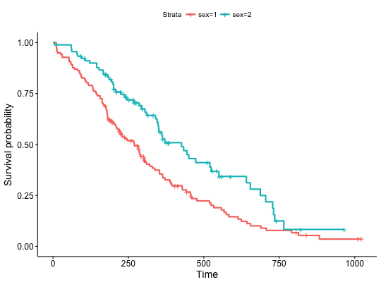
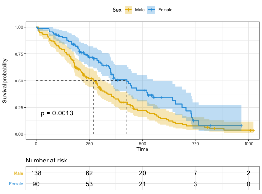
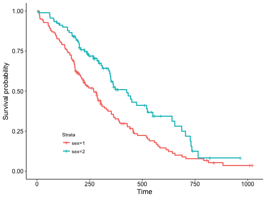
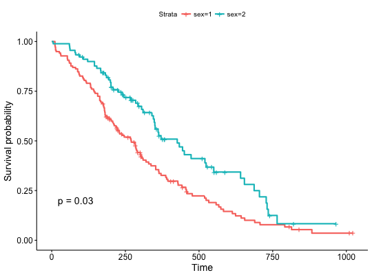
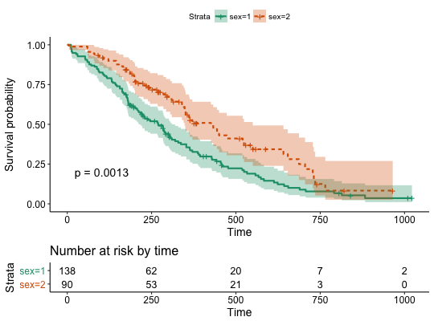

ggsurvplot() is a generic function to plot survival curves. Wrapper
around the ggsurvplot_xx() family functions. Plot one or a list of
survfit objects as generated by the
survfit.formula() and surv_fit functions:
See the documentation for each function to
learn how to control that aspect of the ggsurvplot().
ggsurvplot() accepts further arguments to be passed to the
ggsurvplot_xx() functions. Has options to:
-
plot a list of survfit objects,
- facet survival curves into multiple
panels,
- group dataset by one or two grouping variables and to create
the survival curves in each subset,
- combine multiple
survfit
objects into one plot,
- add survival curves of the pooled patients
(null model) onto the main stratified plot,
- plot survival curves from
a data frame containing survival curve summary as returned by
surv_summary().
ggsurvplot(fit, data = NULL, fun = NULL, color = NULL, palette = NULL,
linetype = 1, conf.int = FALSE, pval = FALSE, pval.method = FALSE,
test.for.trend = FALSE, surv.median.line = "none", risk.table = FALSE,
cumevents = FALSE, cumcensor = FALSE, tables.height = 0.25,
group.by = NULL, facet.by = NULL, add.all = FALSE, combine = FALSE,
ggtheme = theme_survminer(), tables.theme = ggtheme, ...)
# S3 method for ggsurvplot
print(x, surv.plot.height = NULL,
risk.table.height = NULL, ncensor.plot.height = NULL, newpage = TRUE,
...)
Arguments
- fit
- allowed values include:
- a survfit object
- a list of survfit objects. Passed to
ggsurvplot_list()
- a data frame containing survival curves summary. Passed to
ggsurvplot_df().
- data
- a dataset used to fit survival curves. If not supplied then data
will be extracted from 'fit' object.
- fun
- an arbitrary function defining a transformation of the survival
curve. Often used transformations can be specified with a character
argument: "event" plots cumulative events (f(y) = 1-y), "cumhaz" plots the
cumulative hazard function (f(y) = -log(y)), and "pct" for survival
probability in percentage.
- color
- color to be used for the survival curves.
- If the
number of strata/group (n.strata) = 1, the expected value is the color name.
For example color = "blue".
- If n.strata > 1, the expected value is the
grouping variable name. By default, survival curves are colored by strata
using the argument color = "strata", but you can also color survival curves
by any other grouping variables used to fit the survival curves. In this
case, it's possible to specify a custom color palette by using the argument
palette.
- palette
- the color palette to be used. Allowed values include "hue" for
the default hue color scale; "grey" for grey color palettes; brewer palettes
e.g. "RdBu", "Blues", ...; or custom color palette e.g. c("blue", "red").
See details section for more information. Can be also a numeric vector of
length(groups); in this case a basic color palette is created using the
function palette.
- linetype
- line types. Allowed values includes i) "strata" for changing
linetypes by strata (i.e. groups); ii) a numeric vector (e.g., c(1, 2)) or a
character vector c("solid", "dashed").
- conf.int
- logical value. If TRUE, plots confidence interval.
- pval
- logical value, a numeric or a string. If logical and TRUE, the
p-value is added on the plot. If numeric, than the computet p-value is
substituted with the one passed with this parameter. If character, then the
customized string appears on the plot. See examples - Example 3.
- pval.method
- whether to add a text with the test name used for
calculating the pvalue, that corresponds to survival curves' comparison -
used only when
pval=TRUE
- test.for.trend
- logical value. Default is FALSE. If TRUE, returns the
test for trend p-values. Tests for trend are designed to detect ordered
differences in survival curves. That is, for at least one group. The test
for trend can be only performed when the number of groups is > 2.
- surv.median.line
- character vector for drawing a horizontal/vertical
line at median survival. Allowed values include one of c("none", "hv", "h",
"v"). v: vertical, h:horizontal.
- risk.table
- Allowed values include:
- TRUE or FALSE
specifying whether to show or not the risk table. Default is FALSE.
-
"absolute" or "percentage". Shows the absolute number and the
percentage of subjects at risk by time, respectively.
- "abs_pct"
to show both absolute number and percentage.
- "nrisk_cumcensor" and
"nrisk_cumevents". Show the number at risk and, the cumulative number of
censoring and events, respectively.
- cumevents
- logical value specifying whether to show or not the table of
the cumulative number of events. Default is FALSE.
- cumcensor
- logical value specifying whether to show or not the table of
the cumulative number of censoring. Default is FALSE.
- tables.height
- numeric value (in [0 - 1]) specifying the general height
of all tables under the main survival plot.
- group.by
- a character vector containing the name of grouping variables. Should be of length <= 2.
Alias of the
ggsurvplot_group_by() function.
- facet.by
- a character vector containing the name of grouping variables
to facet the survival curves into multiple panels. Should be of length <= 2.
Alias of the
ggsurvplot_facet() function.
- add.all
- a logical value. If TRUE, add the survival curve of pooled patients (null model) onto the main plot.
Alias of the
ggsurvplot_add_all() function.
- combine
- a logical value. If TRUE, combine a list survfit objects on the same plot.
Alias of the
ggsurvplot_combine() function.
- ggtheme
- function, ggplot2 theme name. Default value is
theme_survminer. Allowed values include ggplot2 official themes: see
theme.
- tables.theme
- function, ggplot2 theme name. Default value is
theme_survminer. Allowed values include ggplot2 official themes: see
theme.
- ...
- Futher arguments as described hereafter and
other arguments to be passed i) to ggplot2 geom_*() functions such
as linetype, size, ii) or to the function ggpar() for
customizing the plots. See details section.
- x
- an object of class ggsurvplot
- surv.plot.height
- the height of the survival plot on the grid. Default
is 0.75. Ignored when risk.table = FALSE.
- risk.table.height
- the height of the risk table on the grid. Increase
the value when you have many strata. Default is 0.25. Ignored when
risk.table = FALSE.
- ncensor.plot.height
- The height of the censor plot. Used when
ncensor.plot = TRUE.
- newpage
- open a new page. See
grid.arrange
Value
return an object of class ggsurvplot which is list containing the
following components:
- plot: the survival plot (ggplot
object)
- table: the number of subjects at risk table per time (ggplot
object).
- cumevents: the cumulative number of events table (ggplot
object).
- ncensor.plot: the number of censoring (ggplot object).
-
data.survplot: the data used to plot the survival curves (data.frame).
-
data.survtable: the data used to plot the tables under the main survival
curves (data.frame).
Details
-
Color palettes: The argument palette can be used to
specify the color to be used for each group. By default, the first color in
the palette is used to color the first level of the factor variable. This
default behavior can be changed by assigning correctly a named vector. That
is, the names of colors should match the strata names as generated by the
ggsurvplot() function in the legend.
FURTHER ARGUMENTS
Customize survival plots and tables. See also ggsurvplot_arguments.
Plot title and axis labels
- title: main title.
- xlab, ylab: x and y axis labels, respectively.
Legend title, labels and position
- legend: character specifying legend position. Allowed values are one of
c("top", "bottom", "left", "right", "none"). Default is "top" side position.
to remove the legend use legend = "none". Legend position can be also
specified using a numeric vector c(x, y). In this case it is
possible to position the legend inside the plotting area. x and y are the
coordinates of the legend box. Their values should be between 0 and 1.
c(0,0) corresponds to the "bottom left" and c(1,1) corresponds to the "top
right" position. For instance use legend = c(0.8, 0.2).
- legend.title: legend title.
- legend.labs: character vector specifying legend labels. Used to replace
the names of the strata from the fit. Should be given in the same order as
those strata.
Axis limits, breaks and scales
- break.time.by: numeric value controlling time axis breaks. Default value
is NULL.
- break.x.by: alias of break.time.by. Numeric value controlling x axis
breaks. Default value is NULL.
- break.y.by: same as break.x.by but for y axis.
- surv.scale: scale transformation of survival curves. Allowed values are
"default" or "percent".
- xscale: numeric or character value specifying x-axis scale.
- If numeric, the value is used to divide the labels on the x axis. For
example, a value of 365.25 will give labels in years instead of the original
days.
- If character, allowed options include one of - "d_m", "d_y",
"m_d", "m_y", "y_d" and "y_m" - where
d = days, m = months and y = years. For
example, xscale = "d_m" will transform labels from days to months; xscale =
"m_y", will transform labels from months to years.
- xlim,ylim: x and y axis limits e.g. xlim = c(0, 1000), ylim = c(0, 1).
- axes.offset: logical value. Default is TRUE. If FALSE, set the plot axes to start at the origin.
Confidence interval
- conf.int.fill: fill color to be used for confidence interval.
- conf.int.style: confidence interval style. Allowed values include c("ribbon", "step").
- conf.int.alpha: numeric value specifying confidence fill color transparency.
Value should be in [0, 1], where 0 is full transparency and 1 is no transparency.
P-value
- pval.size: numeric value specifying the p-value text size. Default is 5.
- pval.coord: numeric vector, of length 2,
specifying the x and y coordinates of the p-value.
Default values are NULL.
- pval.method.size: the same as
pval.size but for displaying
log.rank.weights name.
- pval.method.coord: the same as
pval.coord but for displaying
log.rank.weights name.
- log.rank.weights: the name for the type of weights to be used in
computing the p-value for log-rank test. By default
survdiff is used
to calculate regular log-rank test (with weights == 1). A user can specify
"1", "n", "sqrtN", "S1", "S2", "FH" to use weights specified in
comp, so that weight correspond to the test as : 1 -
log-rank, n - Gehan-Breslow (generalized Wilcoxon), sqrtN - Tarone-Ware, S1
- Peto-Peto's modified survival estimate, S2 - modified Peto-Peto (by
Andersen), FH - Fleming-Harrington(p=1, q=1).
- surv.median.line: character vector for drawing a
horizontal/vertical line at median survival.
Allowed values include one of c("none", "hv", "h", "v"). v: vertical, h:horizontal.
Censor points
- censor: logical value. If TRUE (default), censors will be drawn.
- censor.shape: character or numeric value specifying the point shape of censors.
Default value is "+" (3), a sensible choice is "|" (124).
- censor.size: numveric value specifying the point size of censors. Default is 4.5.
Survival tables
General parameters for all tables.
The arguments below, when specified, will be applied to all survival tables at once
(risk, cumulative events and cumulative censoring tables).
- tables.col: color to be used for all tables under the main plot. Default
value is "black". If you want to color by strata (i.e. groups), use
tables.col = "strata".
- fontsize: font size to be used for the risk table
and the cumulative events table.
- font.family: character vector specifying text element font family,
e.g.: font.family = "Courier New".
- tables.y.text: logical. Default is TRUE. If FALSE, the y axis tick
labels of tables will be hidden.
- tables.y.text.col: logical. Default value is FALSE. If TRUE, the y
tick labels of tables will be colored by strata.
- tables.height: numeric value (in [0 - 1]) specifying the general height
of all tables under the main survival plot.
Increase the value when you have many strata. Default is 0.25.
Specific to the risk table
- risk.table.title: the title to be used for the risk table.
- risk.table.pos: character vector specifying the risk table position.
Allowed options are one of c("out", "in") indicating 'outside' or 'inside'
the main plot, respectively. Default value is "out".
-
risk.table.col, risk.table.fontsize, risk.table.y.text,
risk.table.y.text.col and risk.table.height: same as for the general parameters
but applied to the risk table only.
Specific to the number of cumulative events table (cumevents)
- cumevents.title: the title to be used for the cumulative events table.
-
cumevents.col, cumevents.y.text, cumevents.y.text, cumevents.height:
same as for the general parameters but for the cumevents table only.
Specific to the number of cumulative censoring table (cumcensor)
- cumcensor.title: the title to be used for the cumcensor table.
-
cumcensor.col, cumcensor.y.text, cumcensor.y.text.col, cumcensor.height:
same as for the general parameters but for cumcensor table only.
Survival plot height
- surv.plot.height: the height of the survival plot on the grid. Default
is 0.75. Ignored when risk.table = FALSE.
Number of censored subjects barplot
- ncensor.plot: logical value. If TRUE, the number of censored subjects at
time t is plotted. Default is FALSE. Ignored when cumcensor = TRUE.
- ncensor.plot.title: the title to be used for the censor plot. Used when
ncensor.plot = TRUE.
- ncensor.plot.height: the height of the censor plot. Used when
ncensor.plot = TRUE.
Other graphical parameters
The plot can be easily customized using additional arguments to be
passed to the function ggpar().
These arguments include
font.title, font.subtitle, font.caption, font.x, font.y, font.tickslab and font.legend,
which are vectors of length 3 indicating respectively the size
(e.g.: 14), the style (e.g.: "plain", "bold", "italic", "bold.italic") and
the color (e.g.: "red") of main title, subtitle, caption, xlab and ylab,
axis tick labels and legend, respectively. For example font.x = c(14,
"bold", "red").
Use font.x = 14, to change only font size; or use font.x =
"bold", to change only font face.
Examples
#%%%%%%%%%%%%%%%%%%%%%%%%%%%%%%%%%%%%%
# Example 1: Survival curves with two groups
#%%%%%%%%%%%%%%%%%%%%%%%%%%%%%%%%%%%%%
# Fit survival curves
#++++++++++++++++++++++++++++++++++++
require("survival")
fit<- survfit(Surv(time, status) ~ sex, data = lung)
# Basic survival curves
ggsurvplot(fit, data = lung)

# Change font size, style and color
#++++++++++++++++++++++++++++++++++++
## Not run: ------------------------------------
# # Change font size, style and color at the same time
# ggsurvplot(fit, data = lung, main = "Survival curve",
# font.main = c(16, "bold", "darkblue"),
# font.x = c(14, "bold.italic", "red"),
# font.y = c(14, "bold.italic", "darkred"),
# font.tickslab = c(12, "plain", "darkgreen"))
## ---------------------------------------------
#%%%%%%%%%%%%%%%%%%%%%%%%%%%%%%%%%%%%%
# Example 2: Facet ggsurvplot() output by
# a combination of factors
#%%%%%%%%%%%%%%%%%%%%%%%%%%%%%%%%%%%%%
# Fit (complexe) survival curves
#++++++++++++++++++++++++++++++++++++
## Not run: ------------------------------------
# require("survival")
# fit3 <- survfit( Surv(time, status) ~ sex + rx + adhere,
# data = colon )
#
# # Visualize
# #++++++++++++++++++++++++++++++++++++
# ggsurv <- ggsurvplot(fit3, data = colon,
# fun = "cumhaz", conf.int = TRUE,
# risk.table = TRUE, risk.table.col="strata",
# ggtheme = theme_bw())
#
# # Faceting survival curves
# curv_facet <- ggsurv$plot + facet_grid(rx ~ adhere)
# curv_facet
#
# # Faceting risk tables:
# # Generate risk table for each facet plot item
# ggsurv$table + facet_grid(rx ~ adhere, scales = "free")+
# theme(legend.position = "none")
#
# # Generate risk table for each facet columns
# tbl_facet <- ggsurv$table + facet_grid(.~ adhere, scales = "free")
# tbl_facet + theme(legend.position = "none")
#
# # Arrange faceted survival curves and risk tables
# g2 <- ggplotGrob(curv_facet)
# g3 <- ggplotGrob(tbl_facet)
# min_ncol <- min(ncol(g2), ncol(g3))
# g <- gridExtra::rbind.gtable(g2[, 1:min_ncol], g3[, 1:min_ncol], size="last")
# g$widths <- grid::unit.pmax(g2$widths, g3$widths)
# grid::grid.newpage()
# grid::grid.draw(g)
#
## ---------------------------------------------
#%%%%%%%%%%%%%%%%%%%%%%%%%%%%%%%%%%%%%
# Example 3: CUSTOMIZED PVALUE
#%%%%%%%%%%%%%%%%%%%%%%%%%%%%%%%%%%%%%
# Customized p-value
ggsurvplot(fit, data = lung, pval = TRUE)
ggsurvplot(fit, data = lung, pval = 0.03)
ggsurvplot(fit, data = lung, pval = "The hot p-value is: 0.031")
